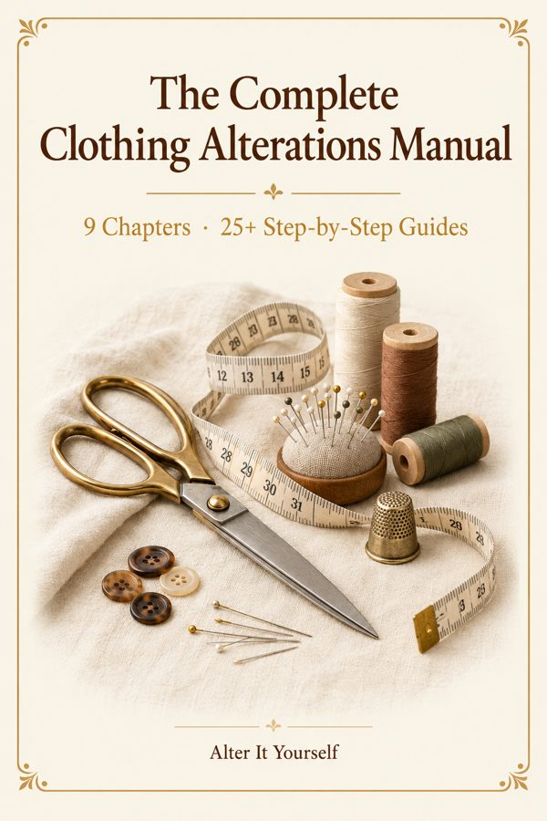

Main product
The Complete Clothing Alterations Manual
9 chapters and 25+ step-by-step illustrated guides covering hems, waists, sleeves, darts, zippers and more.
Open →Your bonuses
Bonus 1
The Sewing Refresher Guide
Fundamentals of hand and machine sewing: stitches, threading, seam allowances and pressing.
Open →Bonus 2The Fabric Reference Card
Quick-reference card for common fabrics: needle, thread, stitch and care at a glance.
Open →Bonus 3The Fit Diagnosis Checklist
Step-by-step checklist to identify exactly what is wrong with the fit of any garment.
Open →Where to start
- {'titulo': 'Download Your Manual', 'desc': 'Open The Complete Clothing Alterations Manual and read the first chapter.'}
- {'titulo': 'Try Your First Alteration', 'desc': 'Pick one guide from the manual and follow the step-by-step instructions.'}
- {'titulo': 'Use Your Bonus Kits', 'desc': 'Reference the Sewing Refresher Guide, Fabric Card and Fit Checklist as you go.'}
For personal use only. Not for resale or redistribution.